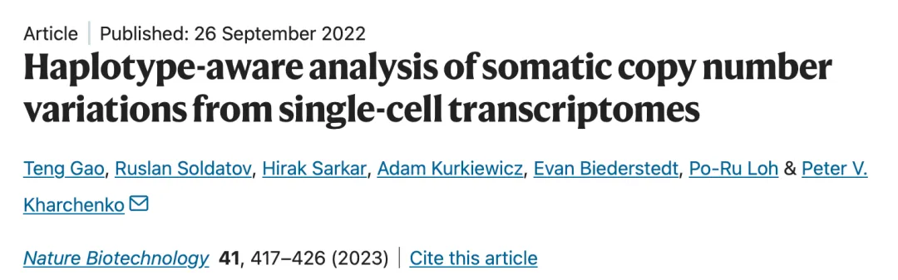
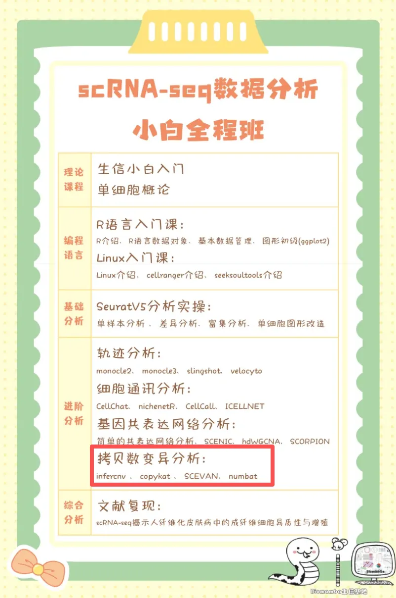
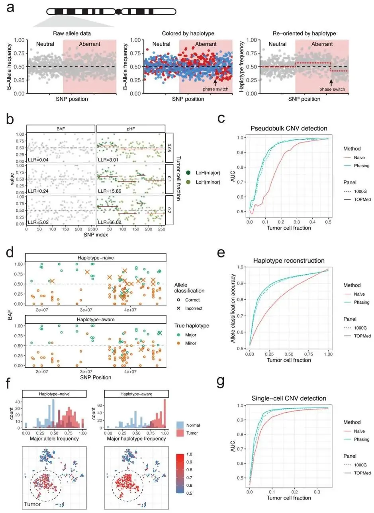
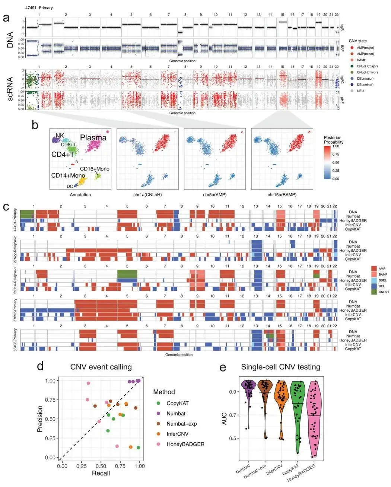
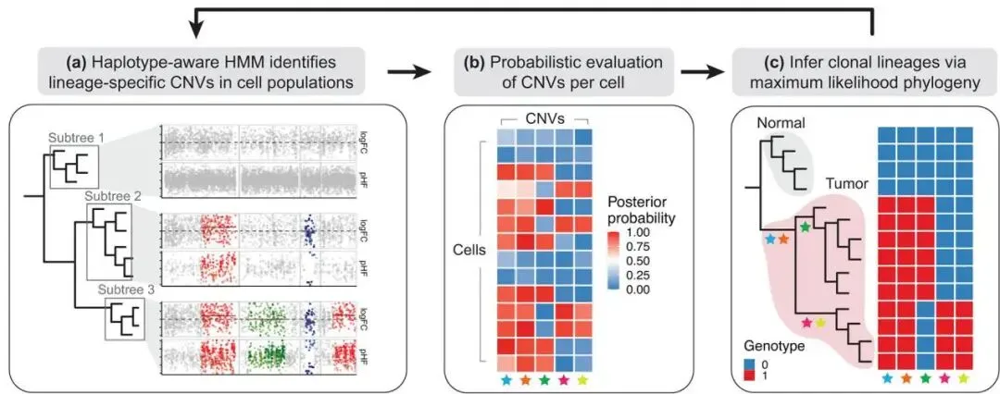
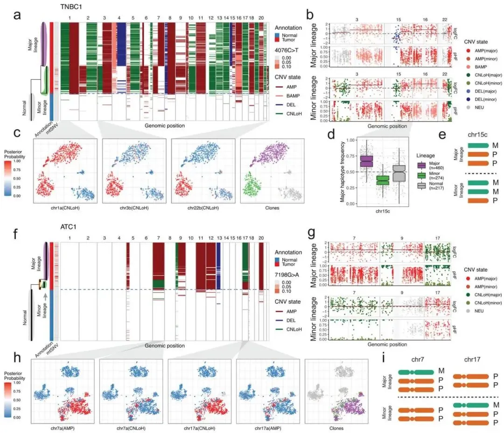
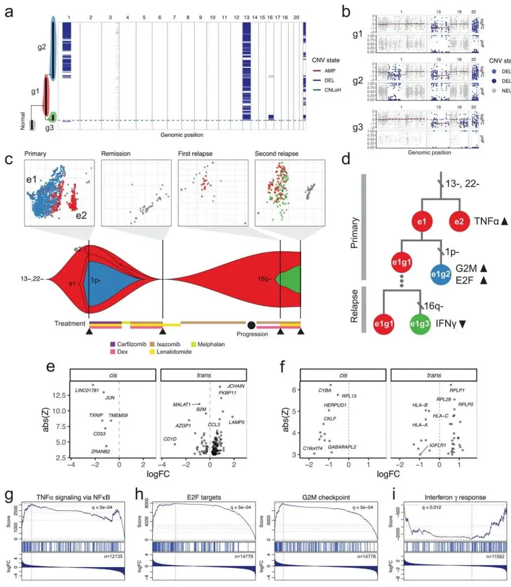

IF=41.7：Numbat—基于scRNA-seq单倍型感知拷贝数变异分析
原文：https://mp.weixin.qq.com/s?__biz=MzAwMzIzOTk5OQ==&mid=2247531103&idx=1&sn=08cd17747fc7b2388970c193c793e815&chksm=9b3c030fac4b8a19051c0bd00398eaa6212779273b41e75412b89a66531cb5b0bb680d63517d#rd 合集：文献速递
一、写在前面
本次分享的是2022年发布于《Nature Biotechnology》的文章（IF：41.7）“Haplotype-aware analysis of somatic copy number variations from single-cell transcriptomes” DOI: 10.1038/s41587-022-01468-y 链接：https://pubmed.ncbi.nlm.nih.gov/36163550/

肿瘤异质性和基因组不稳定性是癌症发生、进展和治疗耐药性的关键驱动因素 。单细胞 RNA 测序（scRNA-seq）技术的兴起为同时解析肿瘤的遗传与非遗传异质性提供了独特机会。但从 scRNA-seq 数据中精确检测体细胞拷贝数变异（CNV）及其克隆结构仍具挑战性 。本文介绍了一种创新的计算方法Numbat，通过整合基于群体的单倍型信息、等位基因信号和表达信号，显著提升了 CNV 检测的准确性。Numbat利用肿瘤亚克隆间的进化关系，迭代推断单细胞拷贝数谱及其克隆系统发育树，成功应用于多发性骨髓瘤、乳腺癌和甲状腺癌等多种肿瘤类型 。本文旨在阐述 Numbat 的工作原理及其在揭示肿瘤微环境和治疗耐药机制中的应用潜力。 更多拷贝数变异计算教程可参考：一文学会四种scRNA-seq拷贝数变异分析更多教程可参考：我们的600篇生信推送~如果自学有困难的话，恰好我们这周进行scRNA-seq拷贝数变异分析教学，错过直播也可获取录播：100个小时沉浸式学会scRNA-seq数据分析

如果需要数据分析指导 、生信热点全文复现 、自测/数据库数据个性化分析 辅导、常态化实验学习，欢迎联系客服微信[Biomamba_zhushou]
**二、主要结果 **
1. 利用单倍型信息实现灵敏的CNV检测
Numbatt算法的核心创新是：整合单倍型（haplotype）信息 来显著提升从稀疏的scRNA-seq数据中检测拷贝数变异（CNV）的灵敏度。作者首先验证了尽管scRNA-seq数据中的SNP覆盖度很低，但利用群体水平的单倍型推断（population-based haplotype phasing） 工具（如Eagle2）依然能够有效地推断出等位基因在染色体上的连锁关系，甚至能够连接不同基因座上的SNP。这一跨基因的定相能力至关重要，因为它使得算法能够区分真实的、影响一整段染色体的CNV信号，与单个基因随机发生的等位基因特异性表达（Allele-Specific Expression, ASE） 所带来的噪声。基于这一原理，Numbat构建了一个单倍型感知的隐马尔可夫模型（haplotype-aware HMM） ，该模型通过分析定相后单倍型频率的定向偏移，而非仅仅观察等位基因频率的方差，从而获得了更强的统计效力（图 1a）。在对“伪群体”肿瘤-正常细胞混合样本的基准测试中，该模型成功识别出了在低肿瘤细胞比例下传统方法无法检出的微弱CNV信号（图 1b,c），并且在单细胞层面实现了更准确的等位基因分配，使得单个肿瘤细胞的等位基因不平衡信号更加清晰可见（图 1f,g）。

图1
2. 从转录组推断等位基因特异性拷贝数
为了获得更稳健、更全面的拷贝数变异（CNV）图谱，Numbat不仅利用单倍型信息，还创新性地将等位基因不平衡（allelic imbalance） 和基因表达丰度（expression magnitude） 这两种正交的信号整合到一个统一的分析框架中。 其核心是一个基于生成式统计框架的联合隐马尔可夫模型（joint HMM） ，该模型能够同时对两种信号进行建模，从而推断出等位基因特异性的拷贝数状态 （例如，父源染色体扩增、母源染色体缺失等），而不仅仅是总拷贝数的变化。 此外，为解决其他工具常因肿瘤整体倍性变化而导致基线判断错误的问题，Numbat采用了一种巧妙的两步法来识别真实的二倍体基线（diploid baseline） ，即先通过等位基因信息找到平衡区域，再从中选择表达水平最低的区域作为参照。 在与拥有“金标准”全基因组测序（WGS）数据的五个多发性骨髓瘤样本的比较中，Numbat推断出的CNV图谱与真实的DNA图谱高度一致（highly concordant） ，其准确率（精确率99.2%，召回率95.4%）显著优于HoneyBADGER、InferCNV和CopyKAT等其他主流方法（图 2d）。特别是，Numbat能够准确识别出拷贝数中性杂合性丢失（copy-neutral LoH） 等仅依靠表达量无法发现的事件（图 2c），展现了其整合多信息的强大能力。

图2
3. 推断肿瘤克隆架构与演化历史
Numbat算法解决了肿瘤异质性分析中的一个核心难题：拷贝数变异（CNV）的检测与肿瘤克隆结构的推断是相互依赖的。在解决这两个问题的过程中，Numbat采用了一种创新的迭代优化程序（alternating optimization procedure） ，以联合推断单细胞CNV图谱和相关的亚克隆系统发育树（subclonal phylogeny） 。这个过程始于一个基于表达谱聚类的初始演化树（图3a）。在每一次迭代中，算法首先会根据当前的演化树结构，将细胞聚合成更精确的、谱系特异性的“伪群体（pseudobulks）”，并在此基础上运行其联合HMM模型以识别共享的CNV事件（图3b）。随后，算法会利用这些新发现的CNV事件，反过来为每一个单细胞计算其携带该事件的后验概率。这个包含不确定性信息的概率矩阵将被输入到一个最大似然完美系统发育（maximum-likelihood perfect phylogeny） 的框架中（ScisTree），以构建一个更准确、更精细的演化树。这个新生成的演化树将作为下一次迭代的起点，整个过程循环往复，直至克隆结构和CNV图谱收敛稳定。通过这种相互优化的迭代策略，Numbat能够同时精准地解析出肿瘤的克隆架构和每个细胞的CNV状态（图3c）。

图3
4. 肿瘤与正常细胞的可靠分类
作者在一个包含18个肿瘤样本（涵盖三阴性乳腺癌、甲状腺癌和多发性骨髓瘤）的数据集上，将Numbat的分类准确性与CopyKAT进行了比较。在乳腺癌和甲状腺癌这两个实体瘤样本中，Numbat的准确率极高（平均约98.5%），与CopyKAT的表现相当。然而，在多发性骨髓瘤样本中，两者表现出了显著差异：Numbat依然保持了稳定的高准确率（98.7%），而CopyKAT在八个样本中的五个都出现了细胞簇的错误分类，导致其平均准确率骤降至74.7%。作者推测，这可能是因为多发性骨髓瘤样本的单细胞测序深度较低，且其染色体畸变程度不如实体瘤那般剧烈。这一结果凸显了Numbat的稳健性，因为它通过整合基因表达 和等位基因 这两种正交的证据来源，增强了信号的可靠性，从而在更具挑战性的数据中也能做出准确的判断。
5. 单倍型感知CNV分析揭示亚克隆复杂性
作者向读者展示了Numbat算法最核心的优势：利用其独特的单倍型感知（Haplotype-aware） 能力，揭示了传统scRNA-seq分析方法无法识别的、复杂的肿瘤亚克隆结构。作者首先通过与scDNA-seq 数据的直接比较，证实了Numbat能够仅从scRNA-seq数据中就准确地重构出与DNA层面一致的亚克隆结构（Extended Data Fig. 9）。在对一个三阴性乳腺癌样本（TNBC1）的分析中，Numbat揭示了一个复杂的、具有两个主要演化分支的亚克隆谱系。重要的是它识别出了区分这些亚克隆的、极为精细的等位基因特异性事件，包括亚克隆级别的拷贝数中性杂合性丢失（copy-neutral LoH, CNLoH） ，以及此前从未在scRNA-seq数据中被报道过的镜像的单倍型特异性扩增（mirrored haplotype-specific amplifications） ——即两个不同的亚克隆虽然都扩增了同一条染色体，但它们扩增的分别是来自不同亲本（父源或母源）的染色体拷贝（图 4a-e）。在另一个甲状腺癌样本（ATC1）中，Numbat同样发现了具有相互排斥畸变（reciprocal aberrations） 的两个亚克隆，一个克隆扩增7号染色体并丢失17号，另一个则反之（图 4f-i）。这些复杂的、仅在等位基因层面可见的演化事件，凸显了整合单倍型信息对于深入理解肿瘤异质性的巨大威力。

图4
6. 遗传异质性与转录异质性之间的相互作用
研究团队展示了Numbat的终极应用：通过整合分析，深入探究肿瘤的遗传异质性（genetic heterogeneity） 与转录异质性（transcriptional heterogeneity） 之间的复杂相互作用，并追踪其在治疗过程中的演化。作者以一个多发性骨髓瘤（multiple myeloma） 患者的连续样本（包含初诊、缓解期和两次复发期）为案例进行了深入分析。Numbat首先根据拷贝数变异（CNV）识别出了三个遗传亚克隆（three genetic subclones） ，并清晰地描绘了它们在治疗压力下的演化路径：一个祖先克隆（g1）在初次治疗后幸存下来，并在复发过程中演化出一个新的、更具侵袭性的克隆（g3），最终在第二次复发时成为优势克隆（图 5c）。通过将遗传克隆信息与细胞的转录状态相结合，团队成员发现，在初诊样本中，这些遗传克隆分布在两种不同的转录状态 中，并据此推断出肿瘤演化的先后顺序：一次大规模的转录程序转变先于一次亚克隆CNV事件的获得（图 5d）。通过比较不同遗传亚克隆的基因表达谱，Numbat成功地将特定的CNV事件与其在反式（trans） 作用下调控的关键通路联系起来。例如，最终耐药克隆（g3）所获得的16q染色体缺失，与干扰素γ响应通路（interferon-gamma response pathway） 的下调显著相关，这是一种已知的肿瘤免疫逃逸机制（图 5i）。这一系列分析充分展示了Numbat的强大能力，它能够将肿瘤的基因型、转录表型与临床过程（如耐药）联系起来，从scRNA-seq数据中挖掘出深刻的生物学机制。

图5
三、最后聊聊
Numbat 通过整合单倍型信息和 scRNA-seq 数据，显著提升了肿瘤克隆结构的解析能力，成功区分恶性与非恶性细胞，并揭示了与肿瘤进展和治疗耐药相关的遗传和转录亚群。这项研究在 22 个肿瘤样本中的应用验证了其在多种癌症类型中的鲁棒性，尤其是在识别单倍型特异性 CNV 和克隆复杂性方面展现出独特优势 。不过Numbat 在处理复杂基因组变异（如全基因组倍增）时仍需手动校正，提示未来需改进基线倍性估计方法。展望未来，结合多组学数据（如表观遗传学信息）将进一步增强 Numbat 的功能，为解析基因组不稳定性对肿瘤细胞状态的影响提供更全面视角。Numbat的开源特性及其广泛适用性，使其有望成为肿瘤异质性研究和精准医疗的重要工具 。

如何联系我们

 留一个领取资料、开箱即用的单细胞分析镜像的微信号[Biomamba_zhushou]，方便各位随时交流。同时我们也构建了交流群矩阵，欢迎大家入群讨论。
大家可以阅读完这几篇之后添加给生信入门初学者的小贴士
没有检索，就没有发言权
留一个领取资料、开箱即用的单细胞分析镜像的微信号[Biomamba_zhushou]，方便各位随时交流。同时我们也构建了交流群矩阵，欢迎大家入群讨论。
大家可以阅读完这几篇之后添加给生信入门初学者的小贴士
没有检索，就没有发言权
已有生信基地联系方式的同学无需重复添加

 您点的每个赞和在看，我都认真当成了喜欢
您点的每个赞和在看，我都认真当成了喜欢